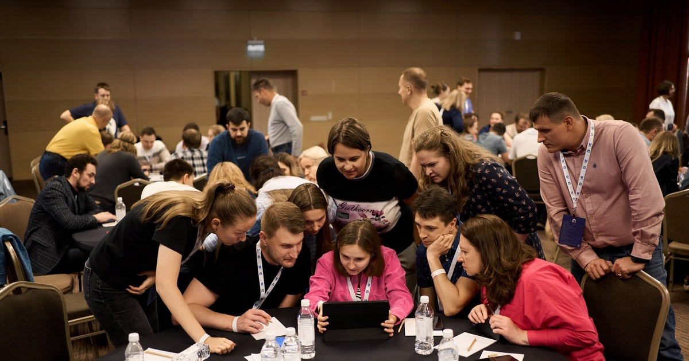
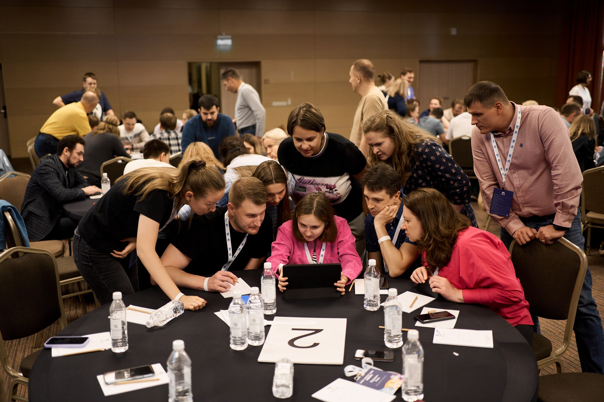
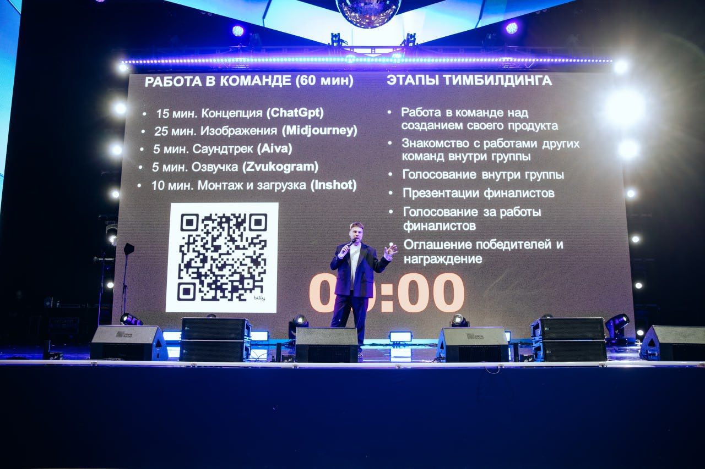
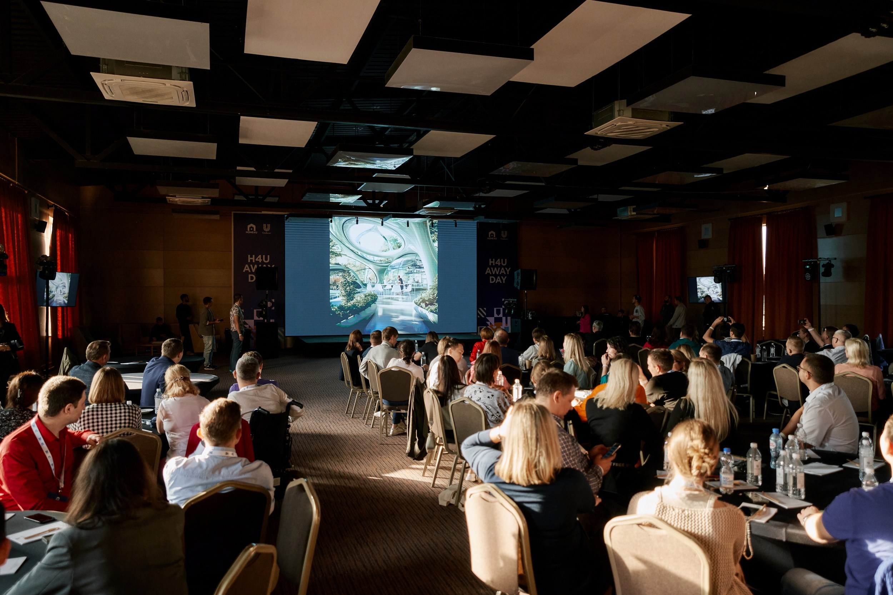

ЧЕРНОВИК. Условно: берём только если площадка (naked-science.ru) подтвердит открытую ссылку без nofollow.
Материал для публикации на naked-science.ru (раздел «Мероприятия» или авторский материал). Word-файл: katalist-timbilding-s-nejrosetyami.docx. Изображения в этой же папке: anons-1200x630.jpg, foto-1.jpg, foto-2.jpg, foto-3.jpg.
Как устроена командная игра с ChatGPT и Midjourney, какую роль в ней играет модель и какие показатели можно замерять уже сейчас, а какие пока остаются вопросами.

Когда команда за два с половиной часа создаёт бренд с помощью нейросетей, снаружи это похоже на весёлую игру. Если смотреть как исследователь, это маленький эксперимент: есть задача, инструмент, жёсткий лимит времени и результат, который можно оценить. Разберу, как такая игра устроена, что делает человек, что делает модель и что в ней измеряется.
Я Мария Варламова, генеральный директор ивент-агентства «Каталист». Игру «Стартап с нейросетями» проводит наше агентство, а в 2025 году она получила премию BEMA как лучший командообразующий проект с использованием ИИ. Исследований с контрольной группой у нас нет. Где данных нет, я пишу об этом прямо: это наблюдение агентства или вопрос для будущего замера.
Возьмём «Стартап с нейросетями». Участники делятся на команды и создают новый бизнес с нуля, а в финале «инвесторам» нужно доказать, что бизнес жизнеспособен. Игра идёт по шагам.

В одном из прогонов на экране висело расписание командной работы: 15 минут на концепцию в ChatGPT, 25 минут на изображения в Midjourney, по 5 минут на музыку в Aiva и озвучку в Zvukogram, 10 минут на монтаж. Потом команды смотрят работы друг друга, финалисты выступают, зал голосует. Запомните эту деталь: время на каждый шаг жёстко задано. Для любого замера это удобно, потому что видно, где команда укладывается, а где нет.

Сначала два термина. ChatGPT, Claude и Gemini относятся к большим языковым моделям: программа получает текст запроса, его называют промптом, и достраивает ответ словами, которые по смыслу подходят лучше всего. Midjourney работает с изображениями: по текстовому описанию она создаёт картинку. Во всех программах мы используем нейросеть как инструмент, а не как тему лекции.
Модель не принимает решений за команду. Она выдаёт черновик, а человек выбирает, какой вариант оставить. На нашем практикуме для HR участники сравнивают четыре варианта генерации и выбирают рабочий. Каждый запрос получается мини-экспериментом: поменял слово в описании, получил другой результат.
Есть и ограничение, о котором мы говорим участникам отдельно. Нейросеть ошибается уверенным тоном: выдуманная цифра выглядит так же убедительно, как настоящая. Поэтому в программах есть шаг проверки: сверить ответ модели с исходными данными до того, как документ уйдёт дальше. Второе правило касается данных: что нельзя загружать в публичные нейросети, например персональные данные кандидатов и сотрудников.
За время игры команда проходит четыре навыка, которые легко назвать и труднее проверить.
Наблюдение агентства: за 15-20 минут разогрева даже те, кто впервые открыл нейросеть, начинают уверенно работать с запросами. Числа за этим нет: это оценка ведущих, а не замер. Именно с этого места я бы начинала измерять.

Игра сама производит данные, их нужно только записывать.
Опубликованной сводки по этим показателям у меня нет, поэтому цифр не приведу.
Главный вопрос звучит так: меняется ли навык, а не настроение. Опрос сразу после ивента показывает, понравилось ли людям. Он не показывает, стали ли они работать иначе. Для этого нужны замеры, которые мы бы заложили в программу вместе с заказчиком.
Оговорки такие. Контрольной группы, то есть похожей команды без игры, у нас нет. Компании, которые заказывают такие программы, сами выбирают тему и могут быть заинтересованы в нейросетях заранее. Участники оценивают себя сами. Поэтому честный вывод пока скромный: игра даёт общий результат, и мы видим, как люди с ним работают. Что навык остаётся надолго, мы пока считаем наблюдением, а не доказанным фактом.
Если вы заказываете такую программу и хотите проверить эффект, сделайте три шага до ивента.
Форматы и состав программ описаны на странице Тимбилдинг с нейросетями. Формат для рабочего навыка, где задачи берутся из реальных дел отдела, описан в разделе Обучение нейросетям для HR. Если хотите сделать замер, скажите об этом в брифе заранее: данные нужно собирать с первой минуты, а не восстанавливать после.
Автор: Мария Варламова, генеральный директор ивент-агентства «Каталист».